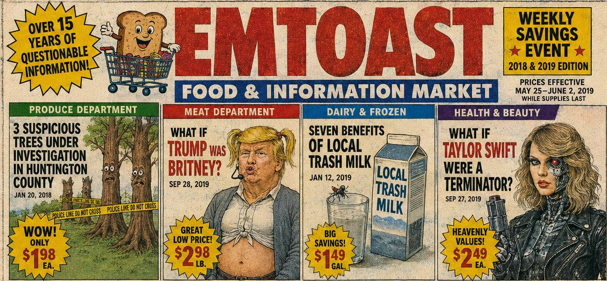
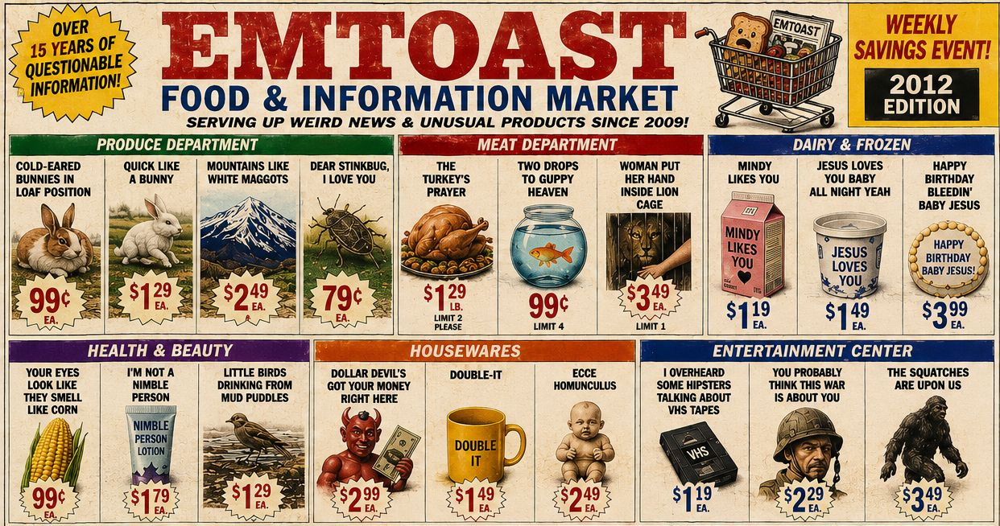

EMToast: Satire in the Age of Misinformation (2019) | Podcast Deep Dive


EMToast: Satire in the Age of Misinformation (2019) continues the chronological deep dive into EMToast history, exploring the fake news stories, surreal humor, celebrity mashups, bizarre health fads, and internet absurdity that defined the site during 2019.
In this episode, we revisit another unforgettable year of EMToast, from Vampires Are Real and 7 Benefits of Local Trash Milk to The Art of the Folk celebrity transformations, where familiar public figures are reimagined in increasingly absurd combinations. Along the way, the discussion explores how EMToast used humor to parody conspiracy theories, online misinformation, health trends, celebrity culture, and the growing challenge of separating fact from fiction on the modern internet.
As social media, viral content, and algorithm-driven news continued to reshape online culture, EMToast responded with satire that was both ridiculous and surprisingly relevant, reminding us that sometimes the best way to understand internet culture is to laugh at its strangest moments.
Read the original posts discussed in this episode:
EMToast Timeline:
https://emtoa.st/yearly-timeline/
2019 Archive:
https://emtoa.st/yearly-timeline/#year-2019
Visit EMToast:
https://emtoa.st/
Graphics from this episode are below:


{kind=link}
{kind=link}
{kind=link}
{kind=link}
{kind=link}
{kind=link}
{kind=link}
{kind=link}
{kind=link}
EMToast: Satire in the Age of Misinformation (2019) Transcript:
HOST 1: Hey everyone, ready for a deep dive into something... well, weird?
HOST 2: We're checking out EMToast.com today.
HOST 1: It's less of a website and more like a digital cabinet of curiosities.
HOST 2: Bizarre news stories, strange advice columns, surreal artwork—it has a little bit of everything.
00:15
HOST 1: It's like someone gathered all the strangest corners of the internet into one place.
HOST 2: And we're here to find the humor in it—and maybe uncover a few unexpected themes along the way.
HOST 1: Because beneath all the absurdity, there's actually some interesting social commentary.
00:30
HOST 2: It reflects our fascination with conspiracy theories, internet culture, and the strange things people choose to believe.
HOST 1: Which brings us to one of the first articles we found.
HOST 2: Vampires Are Real.
00:45
HOST 1: And they're completely serious about it.
HOST 2: Their star witness?
HOST 1: Fred Durst.
HOST 2: Yes... that Fred Durst.
01:00
HOST 1: They present all this so-called evidence.
HOST 2: Blurry Civil War photographs...
HOST 1: Tabloid celebrity stories...
HOST 2: Even a connection to Abraham Lincoln's assistant.
01:15
HOST 1: It's like they assembled random internet images and declared, "Case closed."
HOST 2: But that's what makes the joke work.
HOST 1: The article isn't really about vampires.
HOST 2: It's satire about how misinformation spreads online.
01:30
HOST 1: Especially when it reinforces ideas people already want to believe.
HOST 2: Exactly. It plays like a parody of internet conspiracy culture.
HOST 1: They even bring Wolfram Alpha into the story.
01:45
HOST 2: Claiming it secretly holds the truth about vampires.
HOST 1: Which taps into that fear that technology is somehow hiding secret knowledge from us.
HOST 2: Ridiculous... but also strangely familiar.
02:00
HOST 1: Then they take it even further.
HOST 2: According to the article, heart disease and diabetes aren't diseases at all.
HOST 1: They're vampire bites.
HOST 2: That's certainly a new medical theory.
02:15
HOST 1: Obviously it's nonsense.
HOST 2: But it makes you think about sensational headlines and how easily misinformation can spread.
HOST 1: That's where the satire really lands.
02:30
HOST 2: EMToast isn't just making fun of conspiracy theories.
HOST 1: It's encouraging readers to question what they see online.
HOST 2: Who's making the claim? What's the evidence?
HOST 1: Those are questions worth asking.
02:45
HOST 2: So... Fred Durst probably isn't a vampire.
HOST 1: Probably.
HOST 2: But the lesson about media literacy still holds up today.
03:00
HOST 1: And speaking of questionable advice...
HOST 2: Oh no.
HOST 1: Have you ever heard of Trash Milk?
HOST 2: Somehow I already regret asking.
03:15
HOST 1: The article is called 7 Benefits of Local Trash Milk.
HOST 2: They're suggesting people abandon almond milk, oat milk—everything.
HOST 1: In favor of... trash milk.
03:30
HOST 2: And somehow they manage to present it with complete confidence.
HOST 1: Scientific-sounding language...
HOST 2: Health claims...
HOST 1: Just like those miracle cure articles that flood social media.
03:45
HOST 2: Except instead of exotic berries...
HOST 1: It's garbage.
HOST 2: Which somehow makes it even funnier.
04:00
HOST 1: Of course they include stock photos of smiling people enjoying a nice, refreshing glass of trash milk.
HOST 2: Naturally. What fake health article would be complete without them?
HOST 1: And then they list the supposed benefits.
HOST 2: Better at sorting recyclables...
HOST 1: An excellent source of calcium...
HOST 2: Because apparently that's what half-eaten takeout containers are known for.
04:15
HOST 1: It's ridiculous, but it also pokes fun at our obsession with health trends.
HOST 2: Every year there's another miracle food, miracle supplement, or miracle diet.
HOST 1: EMToast just pushes that logic to its absolute limit.
04:30
HOST 2: They even include instructions for making your own trash milk at home.
HOST 1: A full do-it-yourself guide.
HOST 2: Which somehow makes the joke even better because it's written with complete sincerity.
04:45
HOST 1: So after vampires and trash milk...
HOST 2: ...EMToast changes directions again.
HOST 1: This section is called The Art of the Folk.
05:00
HOST 2: Instead of fake news, it's a series of surreal "what if" scenarios.
HOST 1: Mostly celebrity mashups.
HOST 2: Famous people reimagined in completely unexpected ways.
05:15
HOST 1: Like Taylor Swift as Wolverine.
HOST 2: Chuck Norris as Mother Teresa.
HOST 1: Even Trump as a member of The Beatles.
HOST 2: Every one of them feels equally impossible—and strangely entertaining.
05:30
HOST 1: It sounds random, but there's actually an interesting idea behind it.
HOST 2: We build these public images of celebrities.
HOST 1: EMToast simply tears those images apart and rebuilds them into something completely different.
05:45
HOST 2: It makes you realize how much of celebrity culture is built on expectations.
HOST 1: Change the context, and suddenly the familiar becomes completely absurd.
HOST 2: That's really the running theme across the entire site.
06:00
HOST 1: Whether it's vampires...
HOST 2: Trash milk...
HOST 1: Or celebrity transformations...
HOST 2: Everything invites you to question the stories people accept without thinking.
06:15
HOST 1: So why spend time exploring a site like EMToast?
HOST 2: Because in a world overloaded with information, it's healthy to laugh at the absurdity once in a while.
HOST 1: And maybe question it, too.
06:30
HOST 2: Exactly. Sometimes satire is one of the best ways to encourage critical thinking.
HOST 1: The jokes may be ridiculous...
HOST 2: But they're pointing toward something very real.
06:45
HOST 1: Maybe that's why EMToast still feels surprisingly relevant.
HOST 2: The technology has changed.
HOST 1: The internet has changed.
HOST 2: But misinformation, celebrity culture, and viral trends are still with us.
07:00
HOST 1: Thanks for joining us on another deep dive into the strange world of EMToast.com.
HOST 2: And if you could create your own ridiculous "what if" scenario, what would it be?
HOST 1: Until next time...
HOST 2: Keep exploring the weird and wonderful corners of the internet.
Related posts

EMToast: Top 10 Zombie Sightings
To prepare for the upcoming Halloween celebrations, EMToast has done extensive market research and delved deep into EMToast personal memory…

EMToast: The Absurd Universe Takes Shape (2010–2011) | Podcast Deep Dive
EMToast: The Absurd Universe Takes Shape (2010–2011) continues the deep dive into the strange evolution of EMToast, exploring how the…

EMToast: Top 5 Werewolf Sightings
EMToast has done extensive market research and delved deep into EMToast personal memory banks to bring you the top 5…

EMToast: The Absurd Universe Escalates (2012–2013) | Podcast Deep Dive
EMToast: The Absurd Universe Escalates (2012–2013) | Podcast Deep Dive revisits another chaotic chapter in EMToast history, exploring the fake news…